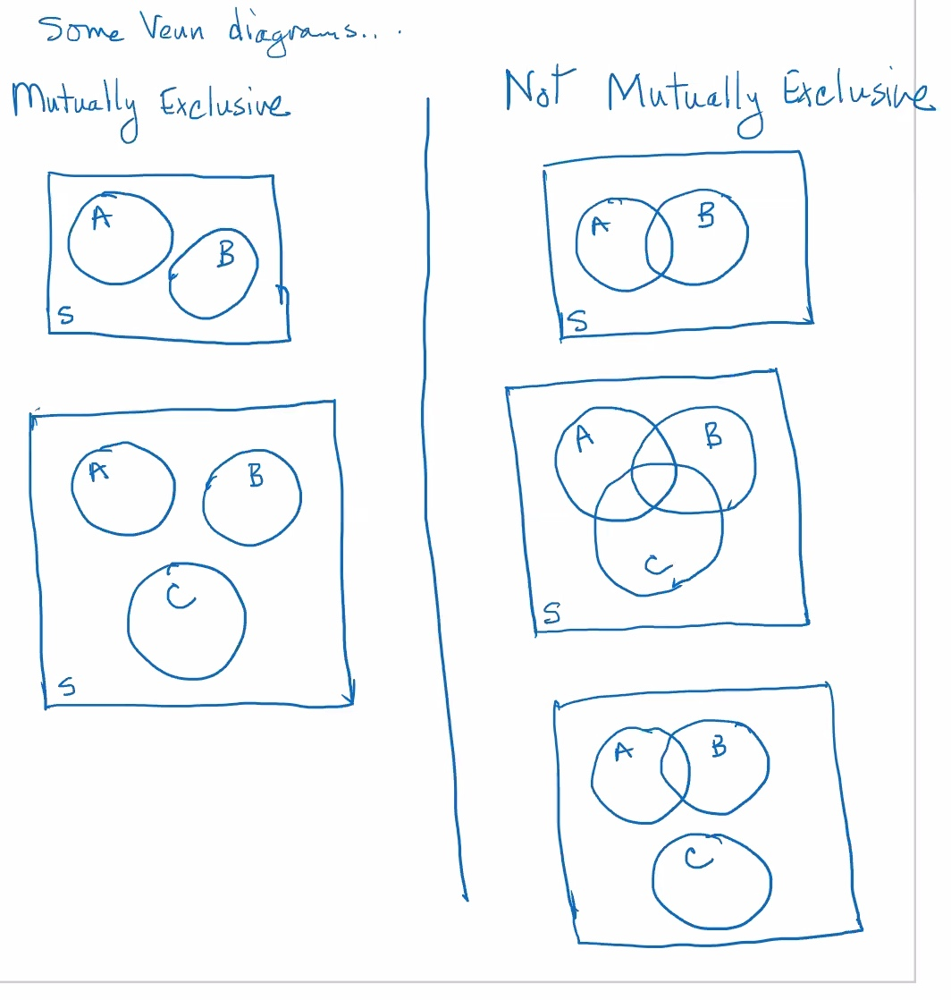

Combining events continued
The intersection of two events A and B, denoted A∩B, is the set of outcomes that belong to both A and to B, in words this means "A and B". Thus the event A∩B occurs whenever both A and B occur.
The complement of an event A, denoted AC is the set of outcomes that do not belong to A. In words, AC means "not A". Thus, the event AC occurs whenever A does not occur.
e.g.
When a die is rolled, the sample space is:
S={1,2,3,4,5,6}
Consider the following events:
- A= "the event the diecomes up even" ={2,4,6}
- B= "the event the die comes up 4 or more" ={4,5,6}
- C= "the event the die comes up at most 2" ={1,2}
- D= "the event the die comes up 3" ={3}
So:
A∩BA∪BA∪B∪CA∩B∩C(A∩B)∪CACB∩ACBC∪CCBC∩CC={4,6}={2,4,5,6}={1,2,4,5,6}=∅={4,6}∪{1,2}={1,2,4,6}={1,3,5}={5}={1,2,3,4,5,6}={3}
Mutually exclusive events
- The events A and B are mutually exclusive if they have no outcomes in common
- More generally, a collection of events A1,A2,⋯,An is said to be mutually exclusive if no two of them have any outcomes in common

e.g.
Consider the previous example's events:
Decide whether the following collection of events are mutually exclusive or not:
- A,B are not mutually exclusive, they have a 4 in common.
- B,C are mutually exclusive, no common outcomes.
- A,B,C are not mutually exclusive (see 1)
- B,C,D are mutually exclusive, no common outcomes.
- A,B,C,D are not mutually exclusive (see 1,3)
Probability
Stat50 lect 2.1 cont'd--probabilities.pdf
Given any experiment and any event A:
- The expression P(A) denotes the probability that the event A occurs.
- P(A) is the proportion of times that event A would occur in the long run, if the experiment were to be repeated over and over again.
e.g.
Suppose the probability of a weighted coin comes up heads is 0.75, so:
P(heads)=0.75
I would expect the weighted coin to come up heads 75% of the time.